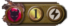

-
This is a tool to construct decks for the Epic card game.
The panel on the right includes every card available, with icons for the color, cost and type (champion or event). You can filter the list using the icons at the top, or search by entering text into the field.
This panel displays the deck you're working on. Add and remove cards by dragging them or double-clicking on  on the left side. You can toggle the number of copies by clicking on the . You can change the deck name in the field at the top, clear the deck with the or switch between decks with the icons. Decks will be automatically saved locally, so don't clear your cookies.
The graphs on the left show useful metrics and analytics about your deck. Hover over a number or a segment of the graph to see what it represents, or click the for a description of that metric.
The link below those graphs lets you preview opening hands by instantly shuffling and drawing cards from your deck. You can also mulligan and draw additional cards.
Epic Deck Forge was created by Dave Berzack to help players build and tweak decks in the full constructed format. I hope you enjoy using it. If you have any ideas for improvement or a new metric you'd like to suggest, message me at dave@epicdeckforge.com
-


{{card.name}}

 This is the total number of cards you've added (including up to three copies of each one) out of the 60 cards required for a constructed deck.This metric shows the composition of your deck, by alignment. Each alignment is divided into two portions. The darker one shows cards that have an ally power or loyalty effect, to show how helpful it is for your deck to have a significant percentage of that alignment.Velocity shows how quickly you can play cards from your hand. 0-cost cards are very helpful. And you should try to have enough events or ambush champions to play on your opponent's turn.This metric shows the various types of card draw abilities. This is obviously helpful, and very important in a high-velocity deck. Note that some of these are less reliable: you may not use a card's draw-2 option, recycle requires cards in your discard pile, and some card abilities may not end up triggering.This metric shows both direct damage (which can target an opponent) and removal abilities (to break, banish or otherwise deal with champions).This metric shows how many champions you have in the deck. Also, champions are divided by their offense stats, to give a sense of your overall attacking power.This graph shows the prominence of the top card types in your deck. This can be useful when building a deck focused on one or more card types.
This is the total number of cards you've added (including up to three copies of each one) out of the 60 cards required for a constructed deck.This metric shows the composition of your deck, by alignment. Each alignment is divided into two portions. The darker one shows cards that have an ally power or loyalty effect, to show how helpful it is for your deck to have a significant percentage of that alignment.Velocity shows how quickly you can play cards from your hand. 0-cost cards are very helpful. And you should try to have enough events or ambush champions to play on your opponent's turn.This metric shows the various types of card draw abilities. This is obviously helpful, and very important in a high-velocity deck. Note that some of these are less reliable: you may not use a card's draw-2 option, recycle requires cards in your discard pile, and some card abilities may not end up triggering.This metric shows both direct damage (which can target an opponent) and removal abilities (to break, banish or otherwise deal with champions).This metric shows how many champions you have in the deck. Also, champions are divided by their offense stats, to give a sense of your overall attacking power.This graph shows the prominence of the top card types in your deck. This can be useful when building a deck focused on one or more card types. -